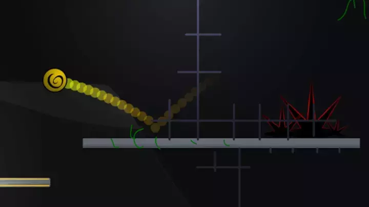
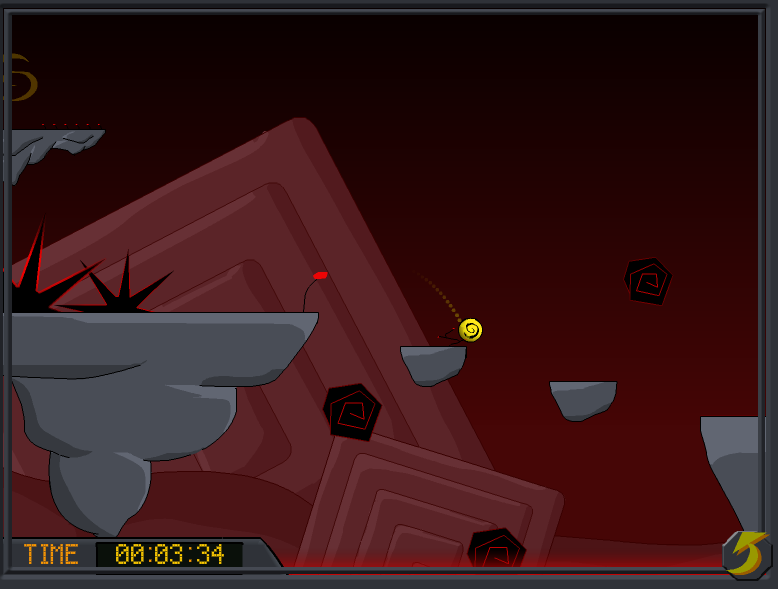
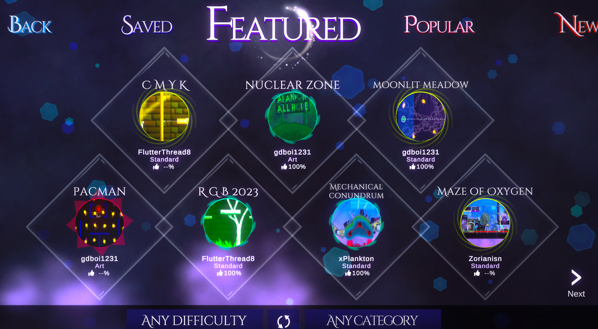
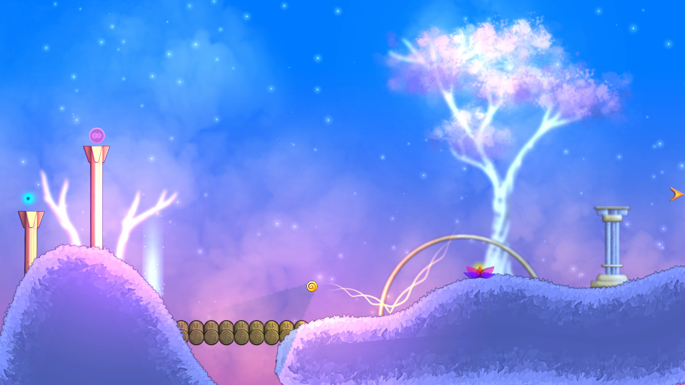
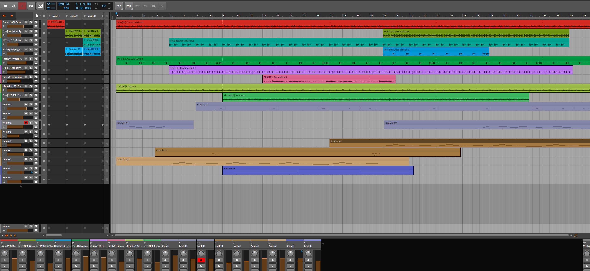
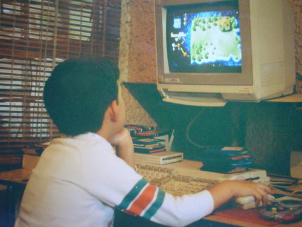
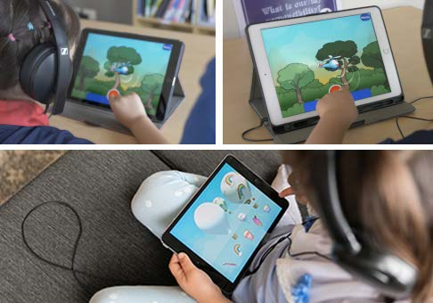
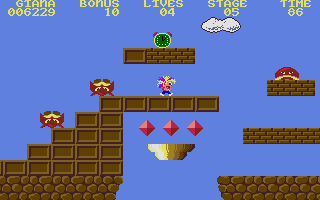
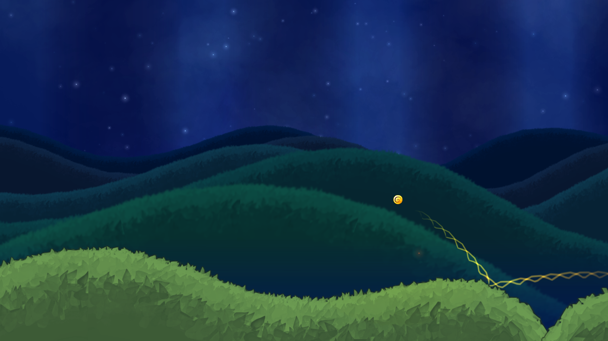

The original Amberial (2007) has a curious story. I wanted to make a web game about breaking the 4th wall, literally. And as a web game contained in a window, I envisioned a simple marble character literally pushing against the walls of the browser, trying to use momentum, springs and strings to get enough force to break out.

So I started making that, but before I got to coding the actual wall breaking mechanics, I realised the game was fun enough as it was, and my focus shifter to building environments and soundscapes to create a proper feeling of adventure and traversal.
The concept itself is heavily inspired by games like Marble Madness, Within a Deep Forest and Super Monkey Ball, where you cannot jump and all the focus on the environment and level design. In games like these, you are not only seeing where you can land and what obstacles to avoid, but you get to savour the angle of each bounce, the momentum against every gap.

After the first Amberial, each new version has been an evolution of the concept heavily guided by player feedback. This all culminates in Amberial Dreams, which has everything each previous game had.
As for the story, there has always been some environmental narrative in the background, but Amberial Dreams takes a huge leap and presents a story that evolves from and complements the game concepts and environments, giving life to abstract ideas.
Amberial is our life-long project to take everything that we like about platformers, and make an evolving universe that's all about creativity and the pure joy of rolling and bouncing around.

Where there is a lack of jumping, your avatar makes up on speed and bouncing around. This places a unique focus on the level design; we want players to develop an intimate relation with its physics, the geometry and all the mechanisms, creating a strong sense of place.
The level editor is part of the reason why we called it an evolving and creative universe. We want to see players make wild levels, share them, and be surprised in how such a simple control mechanism can give birth to a endless trove of ideas.

But, we also called it evolving because we are working and playing very closely with the community to guide its design. And really, everything about it has been an evolutionary process. The development team are actually fans of the original flash game. We are now in our thirties, but can see that the game has more potential than ever.
This is one of the biggest challenges, but we use a combination of listening to players and looking at data. Sometimes we have very cleary messages from the community that something is off, other times we need to see the analytics to check which level has a big drop-off, which can indicate it needing to be easier or more interesting.

With this goal, we also allow intrepid players to try some of the hardest levels when they first launch the game, or anyone can try the community creations and make their own experiences with the editor.
I am very driven by the concept of Sense of Place which Wikipedia defines as "A multidimensional, complex construct used to characterize the relationship between people and spatial settings. [...] those characteristics that make a place special or unique, as well as to those that foster a sense of authentic human attachment and belonging"
The realms in the game were initially conceptualised by a genuine process of taking cues from actual dreams, the real worlds, and closing my eyes to see what comes up in the screen of the imagination. These concepts are then refined by an iterative process of collaborating with the team, the community, letting music drive more visuals, and letting visuals drive more music.

I like to call this a deliberate synesthetic journey!
I'm so passionate about this topic that I've given talks about it at local meetups. I'm sure in another life I would have been a full-time architect or interior designer.
Being a gameplay-first experience, it has not always been so clear how to best integrate or build certain story beats. We are currently making the 4th version of the introduction cinematic! This one will have a better balance between being playable and poetic, but still giving a clear context of the narrative.
No magic trick here, just iterating a lot, putting it in front of players from very early on, and being ok with changing and letting go of things when they are not working.
Can you get the Yet the world remained twisted.. achievement?
Something that might not be obvious: If you are struggling with a level you can turn on assists on the options menu, allowing you to slow down time and be invulnerable. You won't be able to enter the leaderboards, but can still complete the game and get acheivements with them enabled!
Also, we are planning some homages to the flash game era, and other surprises a bit later in the development process.
The game takes place on a cosmic soup of golden factories, colorul parades, neon temples, and much more. So everywhere you go, we are striving for it to feel memorable, and to have , as mentioned above, a richness and a strong sense of place.
This of course is obvious with the visuals, but there is a very fun challenge of also mapping the music to these concepts. Each world is a different genre and style, so you feel like you are moving through musical dimensions with unique personalities.

And what is really cool is that the music track then DRIVES somes more dynamic elements in the game, eg: many pieces move to its rhythm; when the player collides, it makes a note that is in key with the track, etc.
Thankfully, this approach has worked well, as compliments on the music and sound have been the number one feedback when showing the game.
I am a scanner, addicted to learning new things and exploring the world. Games are great for people like us, since they bring together all forms of art and novel experiences. They keep things interesting and wondorous, specially in the indie space!
My gamedev career started with a bit of a bang in 2007. It was the peak of the flash era; I was still in high school in Mexico and was starting to get into game development. Amberial was my first game, and it proved to be quite popular in places like Kongregate, Newgrounds and Armor Games. That intial success led me to make a few sequels, still on the flash platform.

Over time, I made other small games and sequels for Amberial, but later moved to Australia, flash died as a platform, and I got into AR / VR, contract work, and other hybrid applied gaming projects. In 2018, I started rescuing the concept of the game and showed the prototype in a few local shows, where it was clear that it still had potential, leading to today!
These days I still play everything from Atari 2600 to the latest VR releases. But I like to prioritise, when possible, non digital experiences like museums, nature and theater shows, as cross-media inspiration creates a more fertile ground for the imagination.
To talk about something that is not Amberial Dreams, that would be Sound Scouts, a medical device that tests for hearing problems. It has the shape of a game to make it engaging and fun for children, but is actually a medical device

Working on that has brought the unique challenge of coming up with interesting game mechanics while following and respecting a clinical protocol. But the principles of iteration and testing to have a great game have applied just the same!
I'll just mention my whole stack, since I'm pretty comfortable with it at the moment:
-
Obvious to say, but Version Control (git), back in the flash days I started without it lost entire days of work a few times.
-
For visual stuff, I use the Serif suite (Affinity Photo and Designer). I like that it doesn't need a subscription, and is pretty light.
-
Any decent project management tool. I currently love Airtable due its speed, flexbility, and genereous free
-
For music, I've tried over 10 "DAWs", but keep coming back to Bitwig. For me it offers the best balance between interesting creative ideas, great UI, pricing, and stability.
-
For coding, the Jetbrains suite (Rider, Pycharm, Webstorm). It's awesome to develop stuff in a wide range of technologies using a unified and super powerful IDE
-
For general knowledge Management, or simple note-taking, Obsidian is open source and works on simple markdown files, allowing me to sync and work on multiple devices with ease.
When I was born, my siblings already had a commodore Amiga 500 and an Atari XE, so I remember games as far as my memory of being alive begins. I loved platformers since the beginning; there was something pure about the ease of movement and exploration of a rich but understandable environment. With the Amiga, I actually played Giana Sisters before Super Mario, but also Leander, Flashback, Technoventure (hard to even google now!), Zool, and Shadow of the Beast. Inspired by them, I would spend days drawing and imagining my own games and levels.

A bit afterwards, my family got a chinese knock-off NES console. Very popular in Mexico at the time. We would have these cartidges with "99999" games in them. But Between that and my cousin having an actual NES, my world was opened to Nintendo. The sense of exploration and variety in Super Mario Bros 3 still makes it one of my favorite games to date. I would spend hours with my friends imagining that we were in the game and jumping around, no matter where we were. That of course led to and carried on through to all Super Mario games. Their success has always felt very well earned, creatively speaking.
Growing up, I continued to open my taste to all genres, and at different points got obsessed with everything from ICO, Tony Hawk Pro Skater, Age of Empires, Minecraft, and much more.
There may be a theme of gameplay freedom and exploration across these favorites, but more recently, linear narrative games have also made a big impression and stayed with me: What remains of Edith Finch, The Beginners Guide, Before your Eyes. etc.
But in any case, you asked about platformers, so I will leave it at that :D
Level designs and Game mechanics have to be developed hand in hand; it's hard to test the mechanics without having a lot of variety in the levels, but if something changes in the mechanics, all the levels that use it need to be reviewed or redesigned.
Also, from a market perspective, the game needs to be very unique or special to be noticed, as it is a very saturated genre.
I've been making this game for years, not to mention the original flash games, and I cannot place even in the top 10 of leaderboards anymore!
I also have not being able to beat some of the hardest levels in the Spire of Trials (made by community players that turned into team members).
Of my own, I liked making and seeing people play "clean mind" because it is the first level where the game experience is quite different to anything before it, making you feel like there are a lot of possibilities in the game.
Seeing the concept of a collaborative community being succesful and coming to life:
-
Playing hundreds of levels already made by the community, with mechanics and ideas that I would have never imagined.
-
Speed runners beating each others' times.
-
Collaborating with other musicians to make specific tracks.
-
Players using the "Remix" feature to put their own twist on a campaign level.
This is a game where the the premise of the story itself is about dreamers coming together and imagining a universe, and that is the concept that's also driving our interaction with the community.
We want to help everyone see their imagination come alive, so seeing this actually happen has already made us feel like the game is a success.
